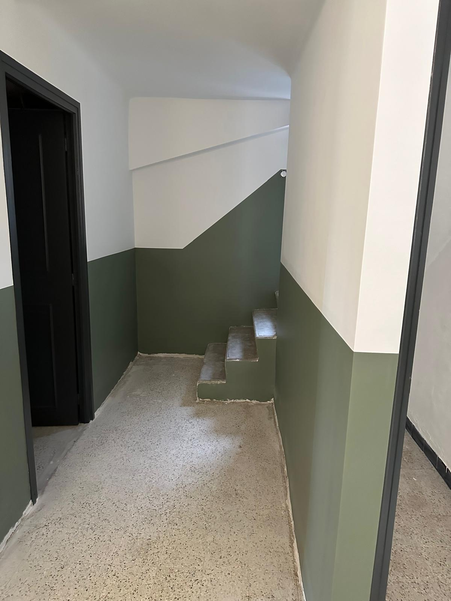
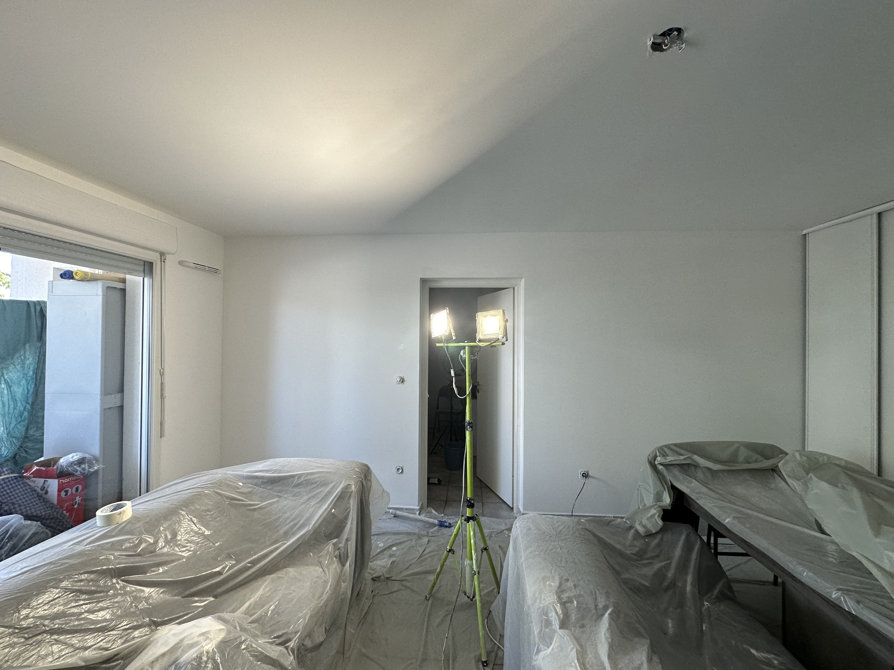
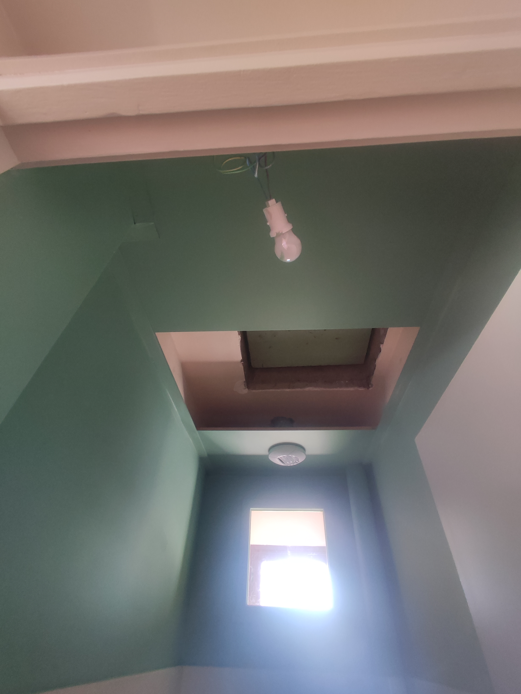
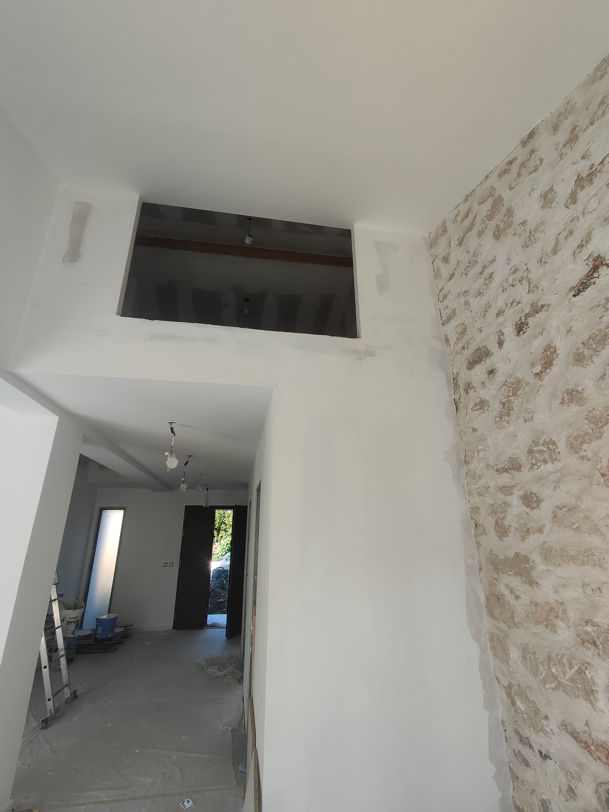
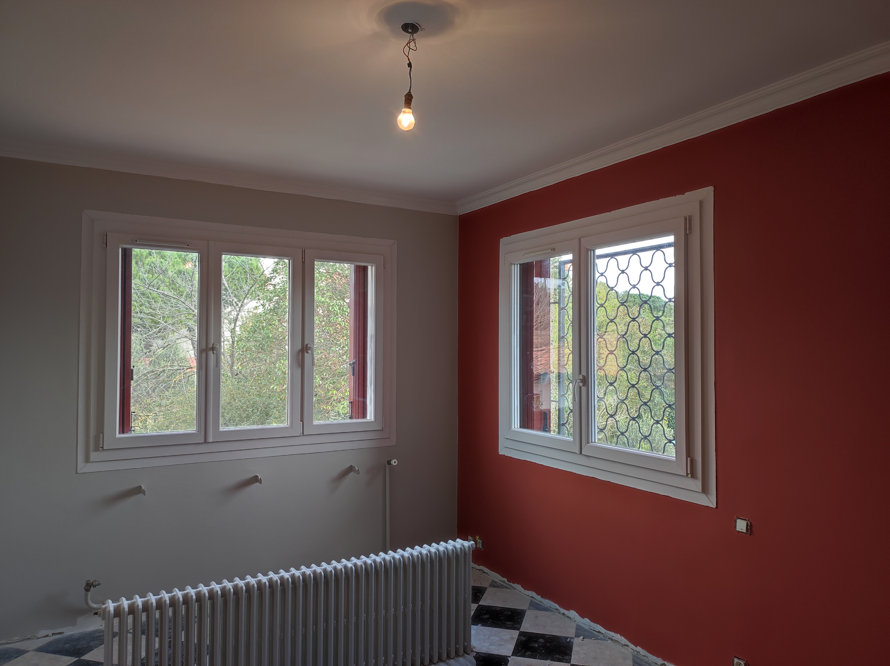
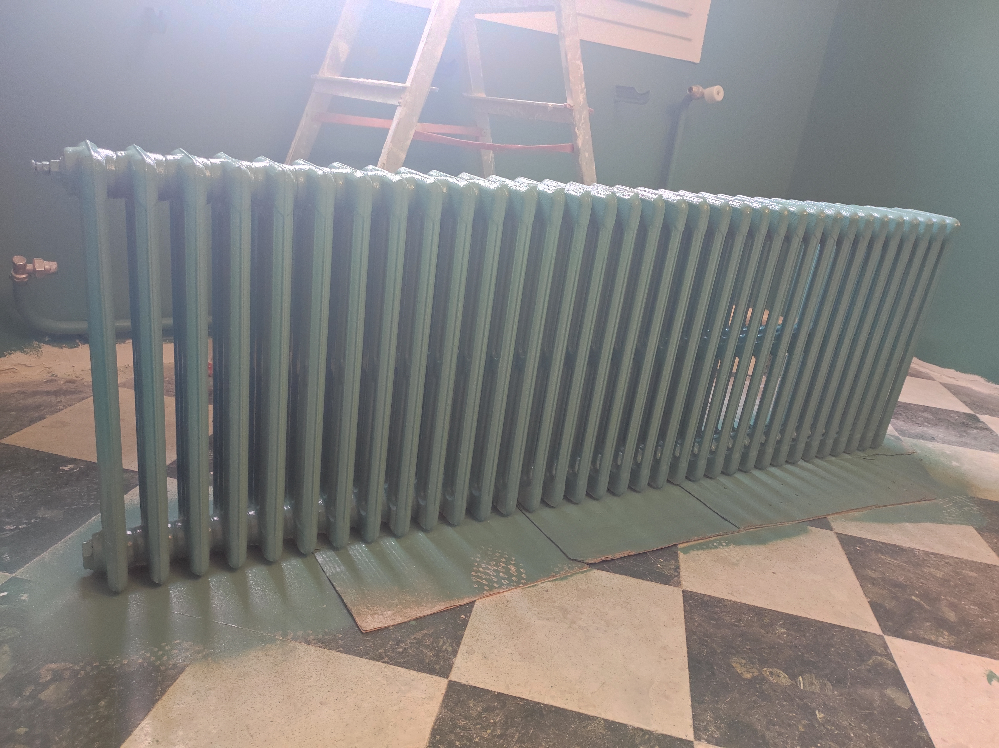
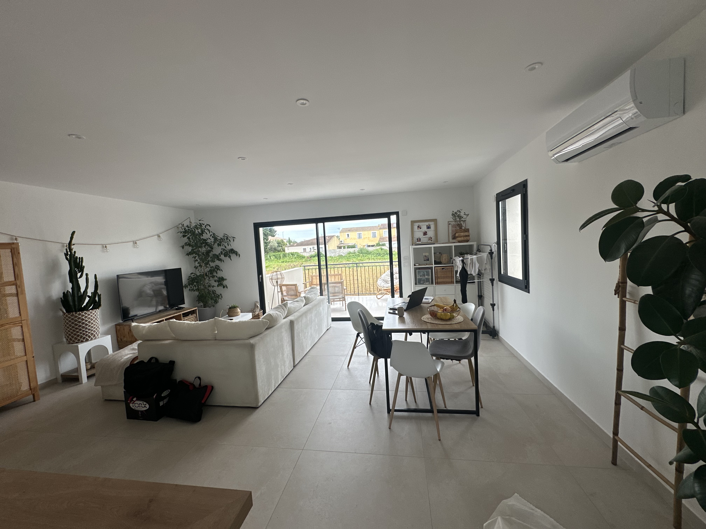
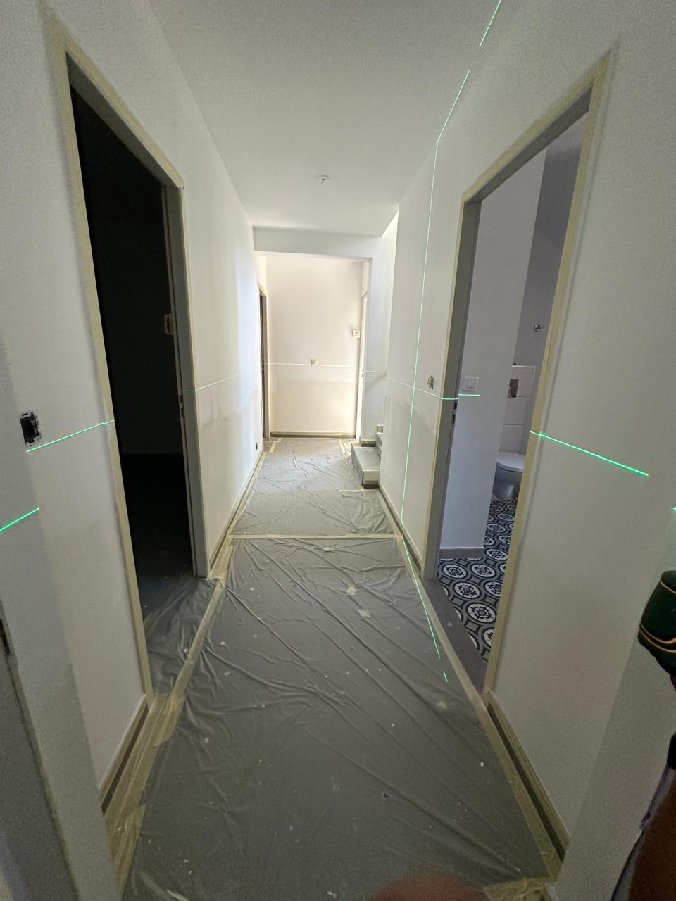
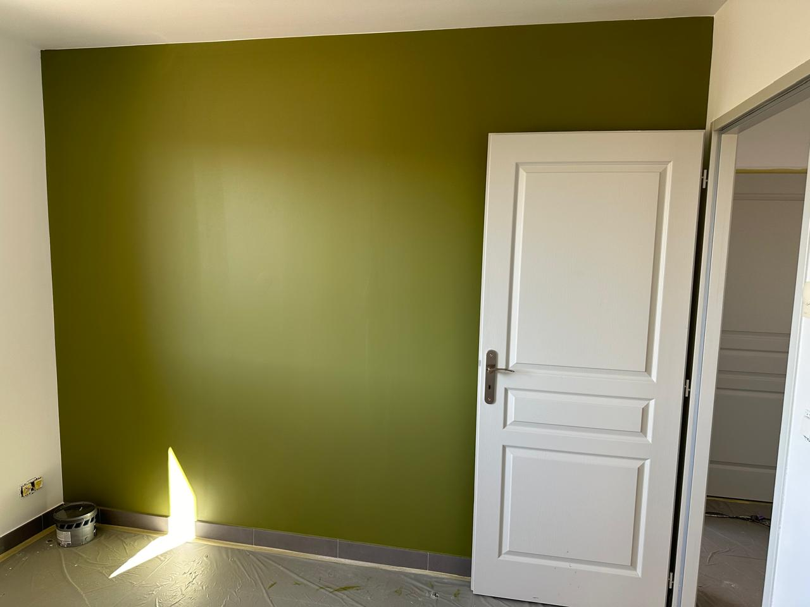
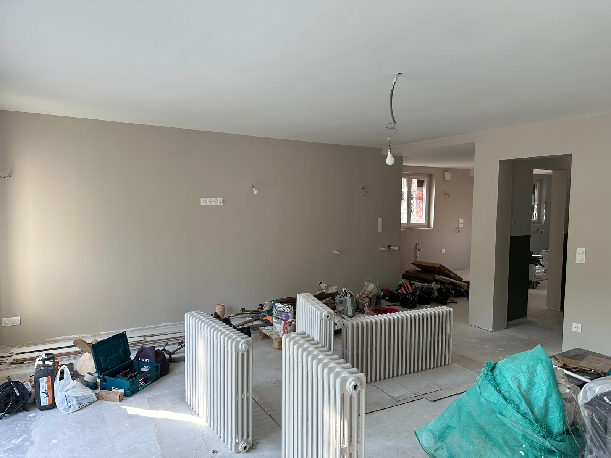

Des boiseries parfaitement laquées qui signent le cachet de votre intérieur
Rien ne vieillit plus vite un appartement ou une maison que des portes jaunies, des plinthes marquées par les chocs ou un escalier en bois terni. À l’inverse, des menuiseries fraîchement préparées et laquées transforment immédiatement la perception de qualité d’un logement.
MULTISERVICES MONTPELLIER met en peinture l’ensemble de vos menuiseries intérieures à Montpellier, Nîmes et Béziers avec un travail minutieux de préparation pour obtenir une surface lisse au toucher et résistante aux rayures du quotidien.
Protection des poignées et serrures, lessivage complet pour éliminer graisses et cires anciennes.
Égrenage soigné et masticage des coups, fissures ou joints entre plinthes et murs.
Sous-couche spéciale bois, mélaminé, PVC ou anciennes peintures glycéro pour éviter tout écaillage.
Application d’une laque satinée ou mate résistante aux chocs, aux griffures et aux lavages fréquents.



Nos réalisations en peinture intérieure
















Éléments intérieurs pris en charge
- Portes intérieures et huisseries : portes planes, portes moulurées à panneaux, portes vitrées avec découpe nette au ras du vitrage.
- Plinthes, chambranles et moulures : finitions rectilignes au millimètre entre mur et boiserie.
- Escaliers intérieurs en bois : remise en état des marches, contremarches, limons et rampes avec vernis ou peinture anti-usure.
- Placards, dressings et meubles intégrés : modernisation de façades en bois ou stratifié par mise en peinture.
- Poutres intérieures et lambris : éclaircissement d’anciens bois foncés en blanc mat ou teintes contemporaines.
Harmoniser vos portes et plinthes avec vos murs
Le blanc cassé ou satiné reste une valeur sûre pour apporter de la luminosité, mais les teintes sobres (gris perle, beige lin, vert sauge ou anthracite sur une porte d’entrée intérieure) créent un contraste architectural très recherché.
Sur les zones fortement sollicitées (poignées, bas de portes, plinthes), nous utilisons systématiquement des peintures ou laques polyuréthanes lessivables qui ne jaunissent pas dans le temps.
Astuce rénovation : Repeindre vos portes, plinthes et placards lors d’un chantier de peinture intérieure évite de conserver des boiseries ternes qui feraient ressortir la fraîcheur des nouveaux murs.
Questions fréquentes
Peut-on repeindre des portes déjà vernies ou peintes à la glycéro ?
Oui. Après un dégraissage et un ponçage d’accrochage soigné, nous appliquons un primaire d’adhérence spécifique avant la laque de finition.
Combien de temps faut-il pour que la peinture des portes soit sèche au toucher ?
Avec nos laques professionnelles à séchage rapide et faible odeur, les portes sont sèches au toucher en quelques heures et utilisables dans la journée.
Faites-vous aussi le rechampi net entre les murs et les plinthes ?
Oui, nos joints acryliques et notre découpe soignée assurent une jonction propre entre les plinthes, les murs et le sol.